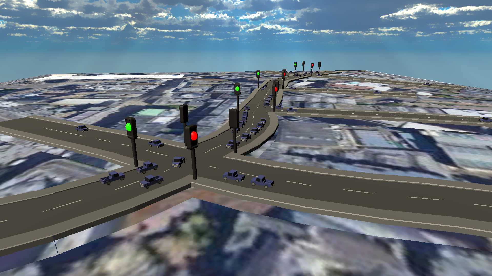
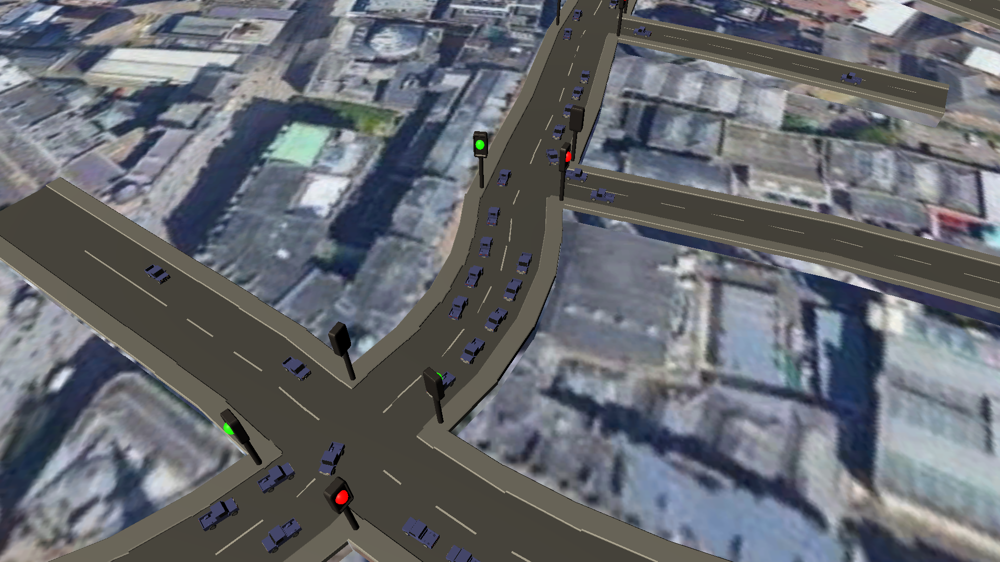
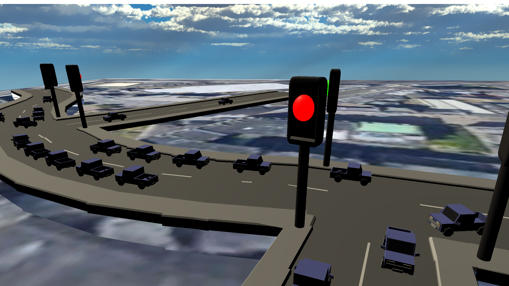

I am a 3rd year student in Abertay University, Scotland. I will be graduating in 2021, with a predicted 1st class degree in Computing. I like to manage projects and create products that utilise machine learning with the purpose of bettering people's lives.
I enjoy Web Development and I like to code in C#, C++ and Java. Arduino, Raspberyy Pi and general IoT have also been great interests of mine. I have also been commended by the Scottish Institue of Enterprise for a business idea I submitted in the Fresh Ideas Competition in February of 2020.
Projects
Artificial Intelligence Emotion Classification System
Machine Learning system that is trained using the MUG dataset and predicts the emotion displayed in a given image file.
Encrypted Instant Messaging Application
Consists of two applications, server and client. Messages exchanged between clients are encrypted and stored in a relational database.
Special Olympics GB Volunteer Training Platform
I was the project leader in a team of four in the process of creating an application platform for Special Olympics GB. I also design the UI for the platform and was in charge of task delagation and the communication with the client.
Multithreaded DNA Translation
Utilizes multiple threads to translate long DNA strands into mRNA and Proteins. This application was also used to showcase how increasing the number of threads, affects the efficiency of the application
Honours Project and Dissertation
My Honours Project focused on simulating a real-world traffic network (part of the Seagate in Dundee, Scotland) and using that simulation to compare AI based traffic light management (Decision Trees and Deep Reinforcement Learning).
The simulation is able to spawn vehicles that can navigate to any part of the road network, with minimal resource requirements

The environment was created with scalability in mind and is able to simulate very large networks, provided the available hardware is powerful enough

Within the environment two AI algorithms (Decision Trees and Deep Reinforcement Learning) were tested, along with standard timer-based traffic traffic lights

After testing the mean speed, travel time, number of stops and time waited at traffic lights, Deep RL came out on top, with Decision Trees and timer-based traffic ligths trailing behind succesively